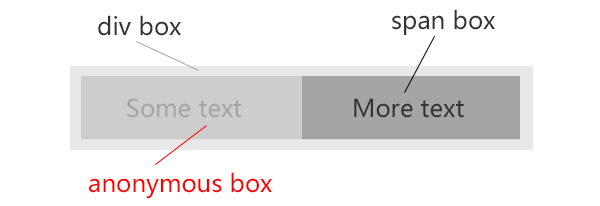

在聊这个话题之前，我们可能得先简单说说 视觉格式化模型 这个概念。
视觉格式化模型 的全称是 Visual formatting model，它被用来描述用户代理（比如浏览器）在图形媒体下如何处理文档树。
在 视觉格式化模型 中，每个文档树的元素会根据框模型产生零到多个框（boxes）。这些框的布局取决于框的尺寸，类型，定位方式（正常流，浮动和绝对定位），元素之间的关系和外部信息（例如：视口 ① 大小，置换元素的固有尺寸等等）。
举个最简单的例子来讲，假设一个页面上有2个div，那么第2个div的位置会取决第1个div的高度定义；假设更复杂一点，第1个div是浮动的，那么第2个div的位置还要取决于第1个div的宽度。
不同类型的框
在 CSS 中，可能会产生不同类型的框，框的类型取决于 display 属性的设定。某种程度上，框的类型会影响其在视觉格式化模型中的表现。接下来会详细的聊聊这些不同类型的框以及它们在视觉可视化模型中的表现。
在说这个之前，我们先回忆一下，大家常说的一些名词：
- Containing block（包含块）
- Block-level element（块级元素）
- Block element（块元素）
- Block-level box（块级框）, Block container box（块容器框）, Block box（块框）
- Inline-level element（行内级元素）
- Inline element（行内元素）
- Inline-level box（行内级框）, Atomic inline-level box（原子行内级框）, Inline box（行内框）
- Anonymous boxes（匿名框）
包含块
首先，来看看什么是 包含块？这个说及 CSS 一般的都会提及的基本概念。
一个元素，它的框的尺寸和位置会相对于一个特定的矩形框边缘来计算而得到，这个特定的矩形框称之为该元素的 包含块。
（为）一个元素生成的框通常会充当其子框的包含块；当我们叫一个 框的包含块 时，其实表达的是 该框所处的包含块，而不是其自身产生的包含块。
每个框相对于其包含块（该框所处的包含块）都会被给予一个位置，不过该框并不局限在包含块内，有可能会溢出，通常这个时候你会借助 overflow 属性来进行处理。
除了说什么是包含块，这里顺带再介绍一下生成包含块的一些特殊场景：
- 由根元素生成的包含块叫做
初始包含块（initial containing block）。 对于其它元素，如果元素的
position值是relative或者static，其包含块由最近的祖先块容器框的内容边界（如果想知道什么是内容边界，可以先看看CSS盒模型）形成。举个例子，
td,th就算有父容器tr，但它们的包含块却是由table生成，因为table是块容器框而tr不是绝对定位元素的包含块由最近的定位（
position值非static）祖先生成，如果不存在这样的祖先，则采用初始包含块；- 固定定位元素（
position: fixed）的包含块一般情况下都由视口 ① 生成；
说了这几个特殊的情景，你会发现并不是所有的包含块都是由父元素所生成。
什么是块级元素？
块级元素是那些视觉上会被格式化成块状的元素，通俗一点来说就是那些会换新行的元素。display 属性的：block, list-item, table, flex, grid 值都可以将一个元素设置成块级元素。
举个例子来说，
li是一个块级元素，但也有人会说它是一个块元素。嗯，li确实是一个块级元素，但并不是一个块元素，为什么？
什么是块元素？
块元素是 display 属性值为 block 的元素，它应该是 块级元素 的一个子集，而不是等同的，一个 块元素 是一个 块级元素，但一个 块级元素 不一定是一个 块元素，所以不要混淆。
块级框，块容器框，块框
什么是块级框？
块级元素生成块级框，这些框会参与某些 BFC。每个块级元素都会生成一个主要的块级框来包含其子框和生成的内容，同时任何定位方式都会与这个主要的块级框有关。
某些块级元素还会在主要的块级框之外产生额外的框：例如 list-item 元素，它需要生成一个额外的框用于包含 list-style-type。这些额外的框会相对于主要的块级框来进行排版。
什么是块容器框？
一个 块容器框 要么只包含 块级框，要么创建一个 IFC 而只包含 行内级框，但不能同时包含 块级框 和 行内级框。
除了 table框 和 置换元素，一个 块级框 同时也是一个 块容器框。非置换的行内块 和 单元格 是 块容器 但不是 块级框。
并不是所有的 块级框 都是 块容器框，也并不是所有的 块容器框 都是 块级框。
块级框 和 块容器框 的另外一个重要的区别是：块级框 需要能够包含其生成的内容，但 块容器框 并不需要。这是什么意思呢？简单的解释一下：
比如一个
iframe其内容由src属性所决定，这可以当成是生成的内容，所以iframe是一个块级框但却不是块容器框
什么是块框？
简要的来说，是 块容器 的 块级框 称之为 块框。
可以通过下面这个图来快速的梳理清楚这3者之间的联系：
 （图一）
（图一）
说完了块级框，接下来说说行内级框
什么是行内级元素？
行内级元素是那些不会为自身内容形成新的块，而让内容分布在多行中的元素。display 属性的：inline, inline-table, inline-block, inline-flex, inline-grid 值都可以将一个元素设置成行内级元素。
什么是行内元素？
如同块元素之于块级元素的关系，行内元素仅仅是 display 属性值为 inline 的元素，这里不再赘述。
行内级框，原子行内级框，行内框
行内级元素生成行内级框，而这些框会参与某个 IFC。一个 行内框 是 行内级框，且其内容参与了包含它的 IFC。一个 display 值是 inline 的非置换元素会生成一个行内框。那些不是行内框的行内级框（例如行内级置换元素、行内块元素、行内表格元素）被称为 原子行内级框，因为它们是以单一不透明框的形式来参与其 IFC 的。
细心的你会发现并没有一个 行内容器框 与 块容器框 相对应，但却多了一个 原子行内级框。并且有趣的是行内块（包括置换和非置换元素）是原子行内级框，而非置换行内块却同时还是块容器框。
 （图二）
（图二）
匿名框
匿名框 包括 匿名块框 和 匿名行内框。
假设一个 div 中包含有一个 p 和一段纯文本 xxx。由于 块容器框 只允许要么包含 块级框，要么包含 行内级框，所以，为了符合这种情况，div 会生成一个匿名的块级框用于包裹 xxx，这个匿名框就叫做 匿名块框。
我们拿 W3C 上的一个例子来加深对匿名块框的印象：
1 | <div> Some text <p>More text</p> </div> |
 （图三）
（图三）
与此同时，我们将上面的代码稍微改一下，将 p 变成 span：
1 | <div> Some text <span>More text</span> </div> |
div 生成一个块框，More text 由 span 生成一个行内框，由于 Some text 没有与之相关的行级元素，将由 div 为其生成一个行内框用以包裹，这个框称为匿名行内框。如图四：
（图四）
假设一个匿名框的类型可根据上下文来清晰界定，则 匿名行内框 和 匿名块框 都可被简称为 匿名框。
匿名框的继承属性会从包含它的非匿名框那里继承，非继承属性取其初始值。
附注：
- ① 用户代理一般会向用户提供一个载体（屏幕上的一个窗口或其它可视区域）用以访问文档，这个载体就叫做
视口。用户代理可以在视口大小被调整时改变文档的布局。如果视口小于渲染文档的画布区域，用户代理应当提供一个滚动机制。每个画布只能拥有一个视口，但用户代理可以把文档渲染至多个画布上（即为相同文档提供不同的视图）。
说明：
- 最近的文章都是断断续续写的，如读者朋友发现存在描述错误地方请及时提醒。